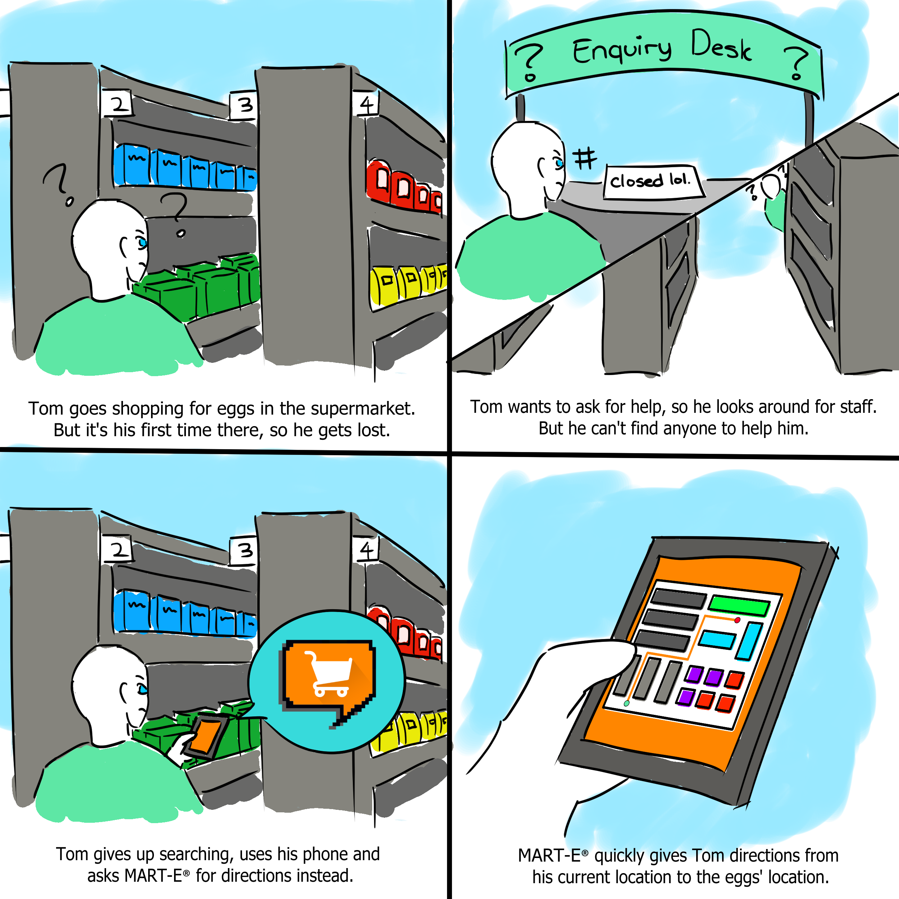
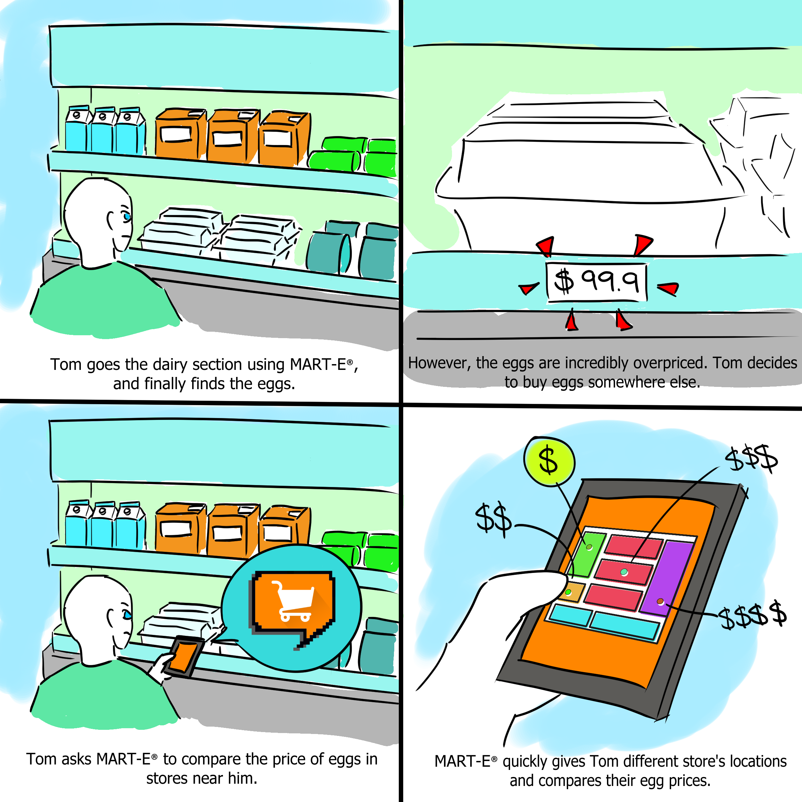

Project II
Human-Robot Interaction
For our second COMP 4461 Project, we were tasked to create a chatbot prototype for a certain scenario in which chatbots are appropriately applicable.
The scenario we agreed on pursuing is on when people go grocery shopping in physical markets (Both supermarkets and wet markets) . Despite how trivial this specific task may seem due to the fact that it is being done so commonly, there are still a mulititude of obstacles and issues customers face while grocery shopping. To add, even with technological advancements and softwares available that facilitate the shopping experience, difficulties still arise in this field.
Because of this, we decided to develop a chatbot to assist customers when shopping in physical stores: Our chatbot is a smart shopping companion, called MART-E.
What is MART-E?
MART-E is an online chatbot that acts as a shopping companion for users. It contains a compiled database of products and pricings, not just from easily-accessible supermarkets, but also from local wet markets which typically don't have information available online. With data sourced from two market groups, MART-E allows users to make smart purchases, shop more efficiently and with ease.
The many exclusive features available in MART-E would make it a suitable companion choice when going out to shop. MART-E also acts as a promotional platform for small vendors and stall owners; By making their store available to see through our platform, they could improve their public vision and even gain a competitive edge in the industry.
Interpret
To further understand our target audience, we've conducted extensive research on the target group's needs. Online sources have shown that people to this date still face difficulties when shopping; When customers are having trouble looking for a specific item or product in a store, they are more likely to try their luck finding that product instead of asking for help from staff, in fear that they may be bothering them.
Our team also discussed our own experiences when grocery shopping in both supermarkets and wet markets, and compiled the potential issues from our first hand experiences:
1. They may spend an unnecessarily long amount of time due to time spent aimlessly wandering around to search for certain products.
2. They may miss out on certain deals that could potentially save them tons of money.
3. They would have to be physically present at shops and move between shops in order to compare product pricings. This is both tedious and costly. (Especially in local wet markets)
4. They may get lost while shopping, due to both the market's large scale and their unfamiliarity with the market's layout. (Especially with foreigners towards wet markets)
5. When customers get lost, they would normally resort to maps as a means to navigate around and through stores. But, it is uncommon for marketplaces to have (on-site and online-available) maps of their layout. Searching for these maps in person presents its own problem.
6. Customers experiencing Language Barriers and Social Anxiety may feel hesitant when seeking help from staff.
7. Staff may not be available to answer customer enquiries, resulting in worsened shopping experience for customers unfamiliar with market layouts.
With background information sourced from both online sources and our team's combined first-hand experience, not only did we grasp a better understanding on the needs of our target audience, but we also realized that this issue amongst shoppers is more prevalent than we presumed at first.

Ideate
With new profound knowledge and understanding on our target audience and their respective needs, we discussed about existing solutions (i.e. softwares and applications) that could have potentially addressed this issue, but doesn't entirely tackle it.
Google Maps
Google Maps is a navigation tool used to help people plan routes and be more familiar with locations. The navigation feature of Google Maps could effectively assist customers by helping them move through markets and stalls that they are unfamiliar with, but there are several limitations to what Google Map offers.
First, Google Maps doesn't have a database on the locations of specific stalls and sectors of marketplaces (Supermarkets and Wet Markets). Google Map has general layouts of cities and countries, but they don't have information on specific and narrowed-down areas. Solely using Google Maps as a navigation tool within clustered marketplaces would prove ineffective.
Second, Google Maps doesn't have a database on specific stalls and sectors of marketplaces (Supermarkets and Wet Markets). Google Map has a rating and review system of landmarks, stores and restaurants. But the amount of information about product pricing and availability completely depends on the reviews of users, if there are even any. Google Maps provides inconsistent, inaccurate and sometimes non-existent information on up-to-date product stocks and pricing.
Both these issues clearly illustrate the problem of completely relying on Google Maps to tackling this issue.
MART-E
MART-E is created by combining the benefits of both Google Maps (i.e. Navigation Tool) and Online Market Sites and Mobile Applications (i.e. Accurate and Up-to-date Information on Products) into a Single Standalone Software. It is also constructed with the inclusion of botkit characteristics (like Siri) and our own features, which will be discussed later on.
MART-E
Storyboard
These comics/illustrations will demonstrate our software functions and how users could use this software.
Inventory Navigation within Markets

Product Price Comparison amongst Markets

Prototype Video Demonstration
Prototype Illustration
We made use of Glitch and BotKit to create the User Interface of MART-E. This Section will also highlight our WOW features available on MART-E. Here is a link to try out the MART-E prototype for yourself.

1. Shopping List
MART-E has a Shopping List feature that allows users to plan items to purchase when shopping outside. Apart from the basic user input method, there are 2 other smart methods MART-E possesses for the Shopping List feature.
Standard Input
1A. Specification
When users input ambiguous and vague items into the list, MART-E will ask for clarification and provide several suggestions on what the user meant to add into the list. The user can select one of the options available to add into the list.
Specification Input
1B. Cookbook
When users input a dish that can be cooked/prepared, MART-E will provide a recipe guide for that particular dish and ask the user if they wish to cook the dish or simply purchase the dish. If users wish to cook the dish for themselves, all the necessary ingredients to cook that dish will be added into the shopping list. But if users just want to buy the dish, that dish will be added into the shopping list for later purchase.
Cookbook Input (Cook Option)
2. In-Store Navigation
MART-E has a database of map layouts for both supermarkets and wet markets. So, while shopping in physical stores, users can simply ask MART-E where a product is, and a digital map will be provided. Not only that, but the user's real-time location will be tracked so as to guide them to the desired destination.

Real-Time Location Guiding to Product
But if users already planned out their Shopping List beforehand, MART-E will provide the shortest possible route within the market users selected to shop in. Not only does this help users traverse new markets, but it also help them to shop quickly and efficiently.
3. Price Comparison
If users wish to compare the pricing of a specific product amongst different markets, they could simply ask MART-E to compare the product pricings of a specific product. MART-E will then provide a table compiled of the locations of markets selling that particular product, and those markets respective selling price.
Sometimes, users wouldn't want to buy the cheapest product, but instead would wish to purchase the product in the nearest market for convenience. Because of that, not only are the product sorted by price, but also by distance from the user.

Price Comparison of Eggs
4. Suggestions and Promotions
Based on the user's Shopping List, MART-E will suggest other products that the user may like to purchase along with their planned items. MART-E also provides promotional offers and deals available, so as to keep users updated on products that they could purchase along with their Shopping List.
5. Easy Product Registration
In order to make products available online for customers to see, shopkeepers and stall owners can simply publish and register their products through MART-E.
Reflection
From this project, I learnt about how Human-Robot Interaction can make or break the user experience; how the UI and UX of an application can make a software/botkit more compelling for users. I also learnt more about the prototyping procedure and its potential importance in large-scale projects. I also learnt more about coding in Javascript and the platform of Glitch, which I believe would prove useful for future applications. By creating the storyboard, MART-E's logo and the video, I've also touched up my video editing and art skills from this project.
Apart from the technical skills, I also learnt more about team communication and leadership. I'm glad that we were able to complete our presentation on time for this project, and hope to keep this up for our other projects.